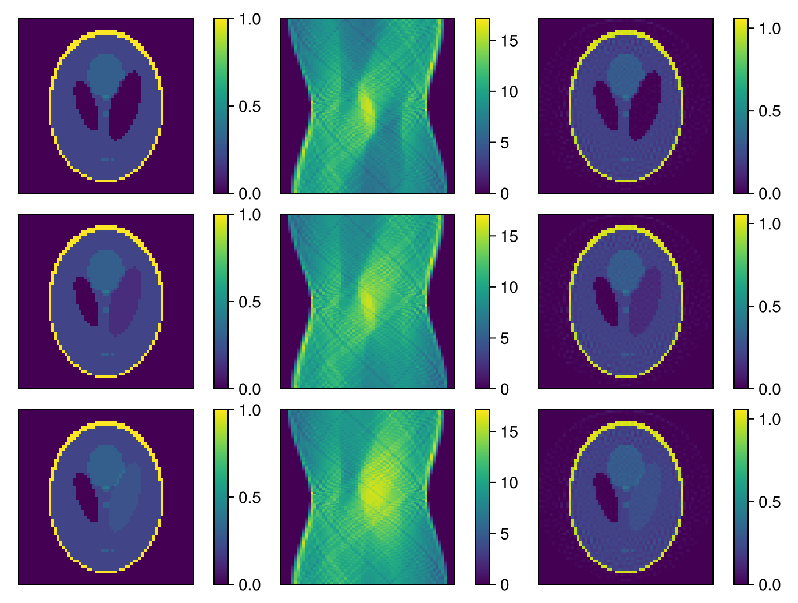
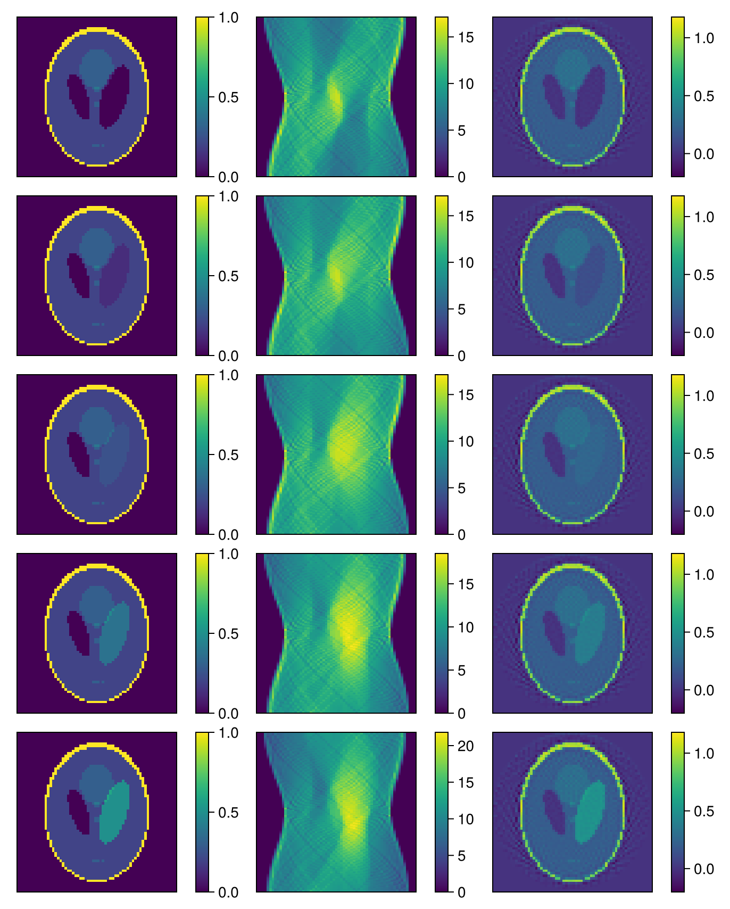

Iterative Reconstruction Result
We can now use the iterative algorithms to reconstruct the first three images of our time series. We first prepare our parameters. For this example we will use the Conjugate Gradient Normal Residual solver with 20 iterations and a L2 regularization of 0.001. Furthermore, we will project the final result to positive values:
pre = RadonPreprocessingParameters(frames = collect(1:3))
iter_reco = IterativeRadonReconstructionParameters(; eltype = eltype(sinograms), shape = size(images)[1:3], angles = angles, iterations = 20, reg = [L2Regularization(0.001), PositiveRegularization()], solver = CGNR);Again we can construct the algorithm with our parameters:
algo_iter = IterativeRadonAlgorithm(IterativeRadonParameters(pre, iter_reco));And apply it to our sinograms:
imag_iter = reconstruct(algo_iter, sinograms);Finally we can visualize the results:
fig = Figure()
for i = 1:3
plot_image(fig[i,1], reverse(images[:, :, 24, i]))
plot_image(fig[i,2], sinograms[:, :, 24, i])
plot_image(fig[i,3], reverse(imag_iter[:, :, 24, i]))
end
resize_to_layout!(fig)
fig
As was already mentioned for the direct reconstruction, the iterative algorithm also needs to be recreated for any parameter change. This can already be quite tedious with the number of parameters we have here. To make this process easier, we can use the RecoPlan feature of AbstractImageReconstruction. This allows us to define a plan for the reconstruction, which can then be used to easily reconstruct the images.
RecoPlan
A RecoPlan is a thin-wrapper around nested key-value pairs that represent the same tree structure of our algorithm and parameters. The plan can be fully parameterized and then used to create the algorithm. But it can also miss parameters and describe the structure of the algorithm only. This can be useful to create a template for the reconstruction, which can be filled with parameters later on.
We can create a plan from our algorithm:
plan = toPlan(algo_iter)RecoPlan{Main.OurRadonReco.IterativeRadonAlgorithm}
└─ parameter::RecoPlan{Main.OurRadonReco.IterativeRadonParameters}
├─ reco::RecoPlan{Main.OurRadonReco.IterativeRadonReconstructionParameters}
│ ├─ iterations = 20
│ ├─ solver = CGNR
│ ├─ reg = AbstractRegularization[L2Regularization{Float64}(0.001), PositiveRegularization()]
│ ├─ eltype = Float64
│ ├─ angles = [0.0, 0.01232, 0.0246399, 0.0369599, 0.0492799, 0.0615999, 0.0739198, 0.0862398, 0.0985598, 0.11088 … 3.03071, 3.04303, 3.05535, 3.06767, 3.07999, 3.09231, 3.10463, 3.11695, 3.12927, 3.14159]
│ └─ shape = (64, 64, 64)
└─ pre::RecoPlan{Main.OurRadonReco.RadonPreprocessingParameters}
├─ numAverages = 1
└─ frames = [1, 2, 3]
The parameters of our plan can be accessed/traversed the same way as the algorithm:
plan.parameter.pre.frames == algo_iter.parameter.pre.framestrueAnd each nested algorithm and parameter struct was converted to a plan:
typeof(plan.parameter.pre)RecoPlan{Main.OurRadonReco.RadonPreprocessingParameters}Unlike the algorithm, we can easily change the parameters of the plan:
plan.parameter.reco.iterations = 30
plan.parameter.pre.frames = collect(1:5)5-element Vector{Int64}:
1
2
3
4
5Instead of traversing the properties of the plan/algorithm, we can also use the setAll! function to set all parameters of the same of the plan at once:
setAll!(plan, :solver, FISTA);This also works with dictionaries of symbols and values:
dict = Dict{Symbol, Any}(:reg => [L1Regularization(0.001)])
setAll!(plan, dict);Once we have parameterized our plan, we can build the algorithm from it:
algo_iter = build(plan)
imag_iter = reconstruct(algo_iter, sinograms)
fig = Figure()
for i = 1:5
plot_image(fig[i,1], reverse(images[:, :, 24, i]))
plot_image(fig[i,2], sinograms[:, :, 24, i])
plot_image(fig[i,3], reverse(imag_iter[:, :, 24, i]))
end
resize_to_layout!(fig)
fig
It's also possible to clear the plan and remove all set parameters. By default this preserves the structure of the plan. Such a plan can be used as a template for further reconstructions and stored as a TOML file:
clear!(plan)
savePlan(stdout, plan) # to save to file use `savePlan("path/to/file.toml", plan)`_module = "Main.OurRadonReco"
_type = "RecoPlan{IterativeRadonAlgorithm}"
[parameter]
_module = "Main.OurRadonReco"
_type = "RecoPlan{IterativeRadonParameters}"
[parameter.reco]
_module = "Main.OurRadonReco"
_type = "RecoPlan{IterativeRadonReconstructionParameters}"
[parameter.pre]
_module = "Main.OurRadonReco"
_type = "RecoPlan{RadonPreprocessingParameters}"Note that the serialization here is not the same as storing the binary representation of the algorithm or the RecoPlan. We essentially store key-value pairs which can be used in keyword-argument constructors to recreate the algorithm, however depending on the version of our Reco package, the underlying structs might change. It is also possible to define custom serialization and deserialization functions for a plan's parameters.
For more information on RecoPlan, see the how-to guides in the documentation.
This page was generated using Literate.jl.